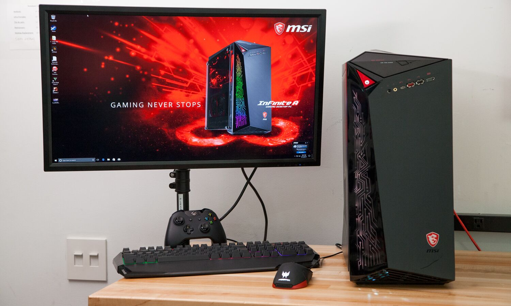

Ik heb zo'n 15 jaar gevoetbald, maar ben recent gestopt wegens blessures. Zie meer via deze link.
Ter vervanging van voetbal startte ik met fietsen. Vaak kijk ik naar Toer de Tietema, een serie videos over een groep vrienden die een avontuur afleggen in de wielrenwereld. Zie meer via deze link.

Gamen doe ik dagelijks op steam, wanneer ik vrije tijd heb. Zie meer via deze link.
